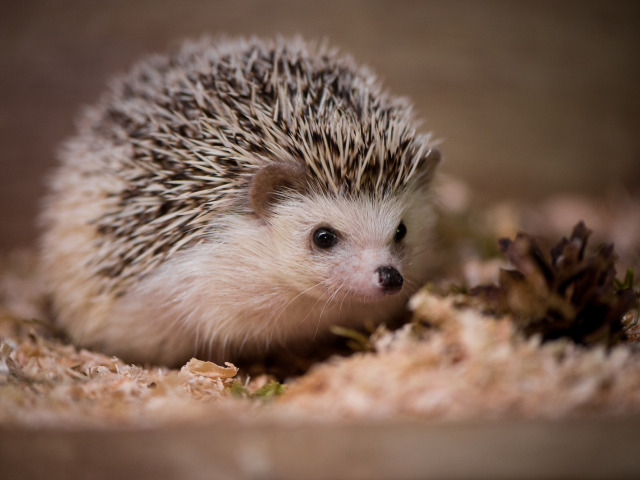

Это вид млекопитающих из рода евразийских ежей семейства ежовых. Обитает в широколиственных лесах Западной и Центральной Европы, в том числе на Британских островах и в южной Скандинавии, а также в северных и центральных районах европейской части России; интродуцирован в Новую Зеландию.

Ареал обыкновенного ежа охватывает Западную и Центральную Европу, включая Британские острова и юг Скандинавии, а также северный и центральный районы европейской части России. Также обыкновенный ёж интродуцирован в Новую Зеландию. В России обитает в северной части европейской части страны (северная граница проходит от около 61° с. ш. на границе с Финляндией до Великого Устюга), средней полосе и верхнем Поволжье (южная граница ареала на территории России проходит в Кировской, Нижегородской области, югу Ярославской и центру Ивановской областей, Подмосковью, Псковской и Тверской областям).